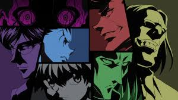
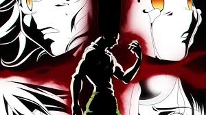

L'arc de l'examen Hunter commence par présenter trois des quatre protagonistes - Gon Freecss, Kurapika et Leolio.
Les trois se rencontrent sur un bateau qui navigue vers le lieu d'examen pour ceux qui veulent devenir des Hunters, des élites aux pouvoirs étranges.
Un autre personnage principal, Kirua Zoldyck, y sera présenté. Les quatre personnages ont des raisons différentes de devenir les Hunters.
Par exemple, Gon veut rencontrer son père, le célèbre Hunter, Ging Freecss tandis que Kirua veut s'éloigner de son héritage familial.
Les autres épisodes de la saison présentent les différentes épreuves auxquelles ils doivent faire face pour obtenir leurs licences de Hunter comme navigation dans une jungle mortelle,
chassant d'autres candidats et bien d'autres aventures dangereuses qui ont pu donner la chair de poule aux spectateurs.
Les téléspectateurs découvrent également des personnages comme Hisoka et Irumi et un peu de construction du monde.
Dans cet arc d'histoire, chaque Hunter se révèle avoir certaines compétences et pouvoirs intrigants, dont le développement sera discuté dans d'autres arcs d'histoire.
Arc famille Zoldyck
Suite à l'échec de Kirua à l'examen hunter, il est retourné au près de sa famille, dans la demeure des Zoldick.
Mais Kirua ne semble pas s'épanouir dans sa vie d'assassin.
Ainsi Gon, accompagné de léolio et kurapika, des amis qu'il a rencontré durant l'examen hunter, vont se rendre à la demeure des Zoldyck afin de délivrer Kirua du monde de l'assassinat .
Mais pénétrer la demeure d'une célèbre famille d'assassins ne sera pas une partie de plaisir...
Arc Tour céleste
Après avoir délivré Kirua, Gon et Kirua se sont séparés de Léolio et Kurapika, et ont continués leur aventure à deux.
Ils se rendent alors dans la tour céleste, où l'on peut s'entraîner au combat , mais également gagner de l'argent.
Ils y rencontrerons Wing, leur premier maître qui va les initier au Nen. Le Nen est un système permettant à un être vivant de manipuler sa propre énergie vitale.
L'apprentissage du Nen est indispensable à un Hunter, c'est ainsi que Gon et Kirua, ont découvert la dernière épreuve secrète, de l'examen Hunter...
Arc Yorkshin City
Après avoir réussi l'examen hunter et ramassé suffisamment d'argent, Gon découvre dans son domicile, en compagnie de son ami Kirua, un message caché de son père.
Ce dernier confie à Gon un moyen de le retrouver, et pour ce faire il doit jouer et terminer un jeu appelé Greed Island, qui est réservé aux utilisateurs de Nen.
Gon et Kirua partent donc en route vers York New City, où se déroule une vente aux enchères organisée par la mafia pour pouvoir y acheter le jeu Greed Island qui sera mis en vente.
Cepedant, un groupe de voleurs appelé "La Brigade Fantôme"mettra en déroute le plan de Gon et Kirua.
Ce groupe de voleurs redouté par tous est constitué de 12 membres utilisateurs de Nen, classés dans la bande par numéro selon leur puissance.
Gon et Kirua devront alors essayer d'obtenir ce qu'ils sont venus chercher, donc le jeu Greed Island, tout en faisant face à la Brigade Fantôme.
Kurapika, l'ami de Gon et Kirua rencontré durant l'arc Hunter sera aussi de la partie, mais pour d'autres raisons...
Arc Greed Island
Gon, Kirua et Leolio reviennent pour aider Kurapika à se rétablir après la bataille contre la Brigade fantôme.
Gon et Kirua réussissent à rejoindre une équipe engagée par le milliardaire, Battera, pour pouvoir jouer à Greed Island (Jeu créer par Ging FREECSS, le père de Gon).
Gon et Kirua y rencontreront Biscuit Krueger, une femme de 57 ans à l'apparence d'une fille de 12 ans, qui est en réalité un utilisateur expérimenté de Nen et deviendra leur 2 ème maître.
Au fil de l'histoire, un joueur surnommé The Bomber explose d'autres joueurs. Mais un joueur nommé Boomer, tue des personnes afin de terminer le jeu.
Gon, Kirua et Biscuit feront équipe avec d'autres joueurs pour eliminer Boomer.
La Brigade fantôme se rendra également sur Greed Island, à la recherche d'un exorciste pour enlever la lame de Nen sur Kuroro Lucifer, chef de la brigade fantôme,
dont les pouvoirs ont été suspendus par Kurapika.
Arc Fourmis Chimères
Ceci est l'arc le plus icônique de l'animé.
Après avoir terminé Greed Island, nos amis Gon et Kirua se rendent dans un pays étranger, avec l'aide d'hunters expérimentés, dont Kaito, l'ancien élève de Ging ,
afin d'éradiquer une nouvelle menace: Les fourmis-chimères. Gon et Kirua veulent aussi profiter de cette mission pour perfectionner leur maîtrise du Nen.
Mais cette mission supposée courte et rapide devient rapidement le seul moyen de sauver l'humanité de cette nouvelle menace.
En effet, les fourmis-chimères sont une espèce inconnus qui évolue à grands pas, et leur origine est pour l'instant inconnu de tous.
L'association des Hunters, ainsi que Gon et Kirua doivent donc se heurter à cette nouvelle espèce, avant que la reine des fourmis-chimères ne donnent naissance au Roi,
qui de par l'évolution exponentielle de cette espèce, pourrait être doté d'une puissance incommensurable.


Fan art de Gon, Kirua et d'autres Hunters Gon attendant neferupito Fan art de Gon lors de son affrontement avec neferupito
Arc élection du 13 ème président Hunter
Netro, l'ancien président de l'association des Hunter est décédé après son affrontement avec le roi des fourmis chimères.
Un nouveau président des Hunter est nécessaire. Les zodiaques sont donc réunis pour organiser une nouvelle élection de leur nouveau président des Hunter.
Ging Freecss, l'un des membres du Zodiaque, dirige l'établissement. Léolio est de retour et devient rapidement l'un des principaux candidats à l'élection.
Ces événements servent de toile de fond aux efforts de Kirua et de ses serviteurs, qui souhaitent remettre sur pied un Gon hospitalisé en utilisant une capacité spéciale d'Aruka Zoldik, sa soeur.
Irumi, le frere de kirua, aidé par Hisoka, tente d'arrêter l'arreter en raison des dangers potentiels liés à l'utilisation des pouvoirs d'Aruka.